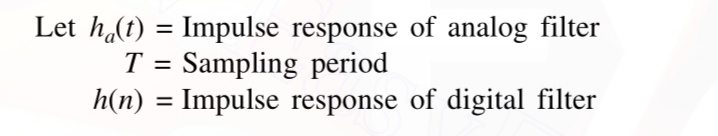
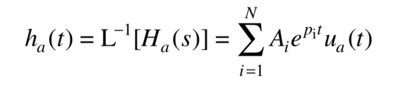
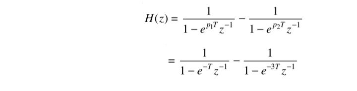

In this technique, the desired impulse response of the digital filter is obtained by uniformly sampling the impulse response of the equivalent analog filter. The main idea behind this is to preserve the frequency response characteristics of the analog filter. For the digital filter to possess the frequency response characteristics of the corresponding analog filter, the sampling period T should be sufficiently small (or the sampling frequency should be sufficiently high) to minimize (or completely avoid) the effects of aliasing.

For impulse invariant transformation,
The Laplace transform of analog filter impulse response gives the transfer function of analog filter

The transformation technique can be well understood by first considering simple distinct poles case for the analog transfer function
The analog response can be obtained by taking inverse laplace transform.

The impulse response h(n) of the equivalent digital filter is obtained by uniformly sampling ha(t), i.e.,

The system function of the digital system of above expression can be obtained by taking z-transform, i.e.,
Using the above equation for h(n), we have

Comparing the above expressions, we can say that impulse invariant transformation can be achieved by mapping,


For the analog transfer function,

determine H(z) if (a) T=1 sec (b)T=0.5 sec using impulse invariant transformation.
Using partial fractions, the given transfer functioncan be expressed as:

By impulse invariant transformation, we know that

Here Ha(s) has two poles and p1 = –1 and p2 = –3. Therefore, the system function of the digital filter is:
